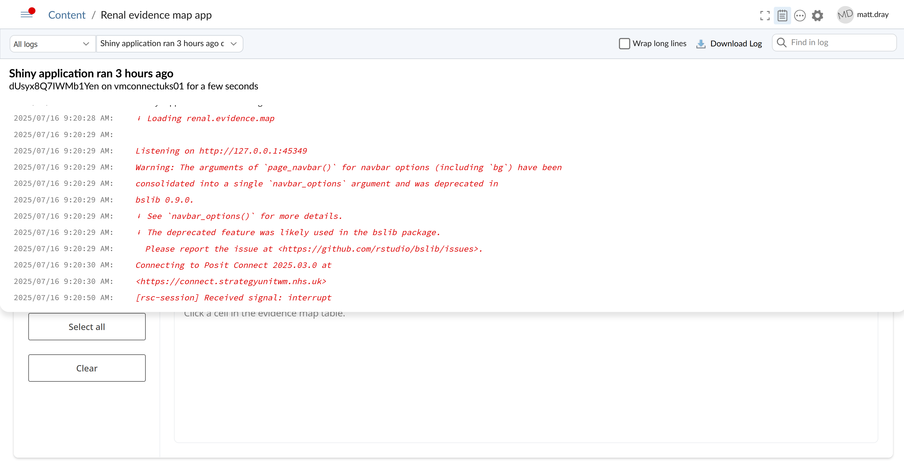

Deploy to Posit Connect
Coffee and Coding
2025-07-17
Notes
This is a brief overview
Learn more in Posit Connect docs
Press the ‘S’ key to see speaker notes
What and why?
Host ‘content’ on ‘someone else’s computer’
Server address: https://connect.strategyunitwm.nhs.uk
Docs, apps, data, APIs, notebooks
Control access, run on schedule
All users see the same up-to-date content
When you generate some ‘product’, where can you put it so others can see it?
At the SU we have a Posit Connect server to host materials.
You can put your work on the web, with admin features like access control and scheduled re-runs.
Everyone can look at the same version and there’s no need to email files around.
SU examples
🔒 Login required.
Here’s some examples of the wide-ranging content already on the SU’s Posit Connect server.
It hosts static sites and documents, apps, pins and APIs.
We’re using it for important work, like the New Hospital Programme.
You can read more about {pins} in a previous presentation and blog .
R demo
Example deploy.R for a Shiny app:
:: deployApp (appName = "coffee-test-app" ,appTitle = "Test app: Coffee and Coding" ,appFiles = c ("R/" , "ui.R" , "server.R" ),server = "connect.strategyunitwm.nhs.uk" ,# appId = <your deployed app's content ID>, lint = FALSE ,forceUpdate = TRUE
Find appID in ⚙️ Settings > Info > Content ID after it’s deployed for the first time.
This is an example of the content to put in deploy.R if you’re deployng a Shiny app.
Note appFiles to specify the minimal set of files needed for the server to render your app.
R demo
Example deploy.R for a Quarto doc:
:: deployDoc (appName = "coffee-test-doc" ,appTitle = "Test doc: Coffee and Coding" ,server = "connect.strategyunitwm.nhs.uk" ,# appId = <your deployed app's content ID>, lint = FALSE ,forceUpdate = TRUE
Or deployApp() to specify undetected appFiles.
This is an example of the content to put in deploy.R if you’re deployng a Shiny app.
Note appFiles to specify the minimal set of files needed for the server to render your app.
deployDoc() detects the required files, so the appFiles argument isn’t needed.However, sometimes files can be missed. You can instead use deployApp() with appFiles. Alternatively, you can specify resources in the YAML: header of your Quarto file with the resource_files key.
Python demo (2)
rsconnect deploy streamlit --name SU --entrypoint app.py .
streamlit: Type of app I am deploying - there are other options--name: Nickname that you gave the server when you logged in with the Connect server. You can check with rsconnect list in your terminal--entrypoint: Name of the file containing your app. Slightly more complicated with the APIs. : Files to include. I’m including all the files in my repo, otherwise the app will not run
Optional arguments:
--app-id: App ID on the Connect server, if you want to overwrite an existing deployment. --new if a fresh one
Web interface
There’s ‘open solo’, ‘logs’ and ‘more options’ buttons.
Panels under the ‘settings’ button are:
Info: e.g. adjust name, get content (app) ID
Access: protect with login, set vanity URL
Schedule: set automated re-run schedule
Vars: set environmental variables
⚠️ Share the direct URL, not the ‘admin view’ URL!
Web interface

Once on Posit Connect, you can login and adjust settings through the app.
The vanity URL means you can put your URL in the form ‘https://connect.strategyunitwm.nhs.uk/’.
Connect can re-render your document at specified times, which can be useful if your datasets continually update and you don’t want to keep having to manually deploy.
If accessing your content through Posit Connect, you’ll get some ‘admin panels’ around the content. This is so that you as a developer can adjust settings. When sharing with users, do not share the URL to this view! Instead, share the direct content URL (Access > Content URL) or click the ‘open solo’ button (icon is the four corners of a square) the top-right to open without the admin panels.
Bonus round
You can use a GitHub Action to deploy when releasing your code, for example. We do this for NHP Inputs app, for example, which has workflows to release to our development environment on merge, to our production environment on release, or to deploy to either location manually.
There is a button in the GUI of RStudio that you can click to deploy. We’re suggesting you use the deploy.R method for consistency. The push-button method relies on an rsconnect/ folder that gets autogenerated on your local machine, which is not obvious to other potential deployers of your app.
Recently we changed from one server to another. The new server has taken the same address as the old one so that all of our URLs stay consistent from the users’ perspectives. We spent some time deploying apps to both servers, but only need to deploy now to https://connect.strategyunitwm.nhs.uk.